오답노트 사용법
책은 한 번만 준비해요. 학생마다 틀린 번호를 골라 시험지를 만들면 돼요.
처음 열기
- 통합 클라우드에서 열어요.
PC 통합 클라우드의 → 오답노트 설치 → 열기를 눌러요. 따로 로그인하지 않고 통합 클라우드의 계정으로 시작해요.
- 책장과 학생 오답노트를 구분해요.
은 문제집·답지를 넣는 곳이에요. 는 학생별로 틀린 문제를 모으는 곳이에요. 처음에는 책장부터 준비해요.
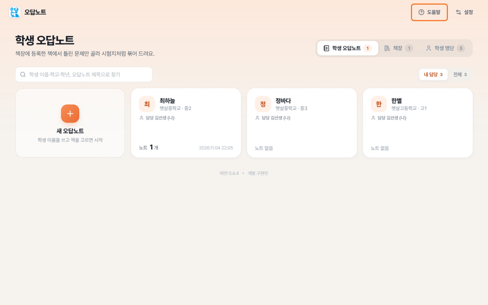
주황 테두리의 도움말은 맨 위 오른쪽 설정 왼쪽에 있어요.
책 등록·분석·확인
문제집과 답지의 PDF 또는 사진을 준비해요. 이미 학원에 공유된 책이 있다면 공유 책장에서 찾아 써도 돼요.
- 책장에 새 책을 등록해요.
→ 새 책 등록을 눌러요.
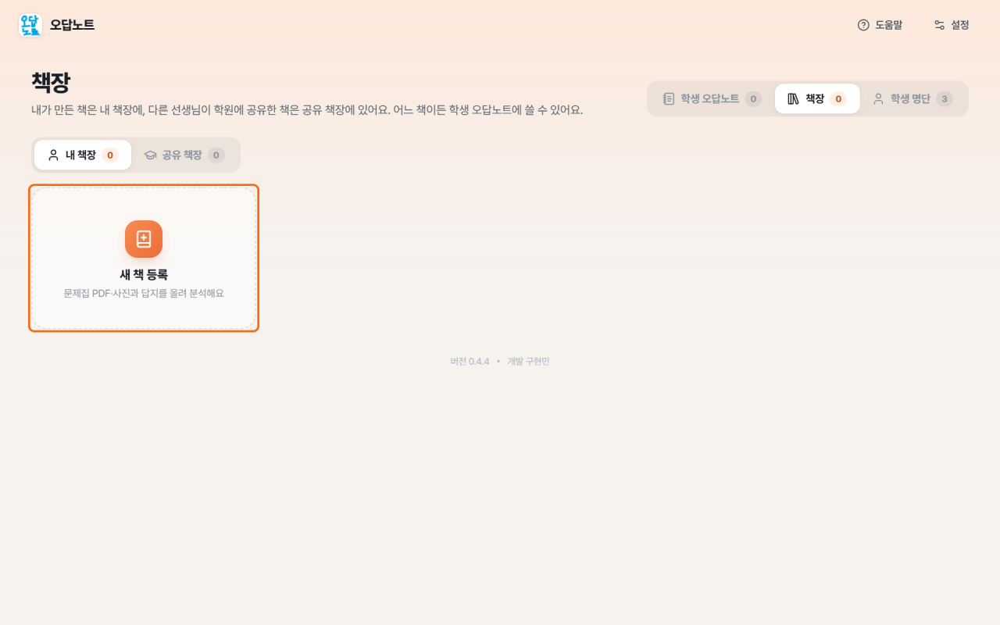
주황 테두리의 새 책 등록을 눌러요. 알아보기 쉬운 책 이름을 적고 등록을 눌러요.
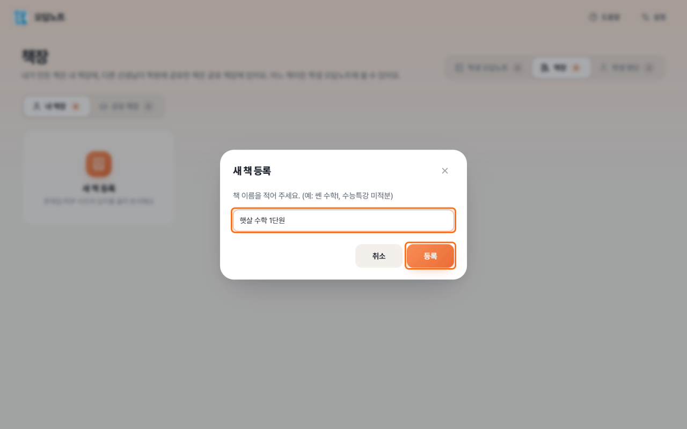
주황 테두리의 책 이름을 채우고 등록해요. - 문제집과 답지 파일을 각각 올려요.
문제집 칸과 답지 칸에 파일을 끌어 놓아요. 칸을 눌러 파일을 골라도 돼요. PDF나 여러 장의 사진을 쓸 수 있어요.
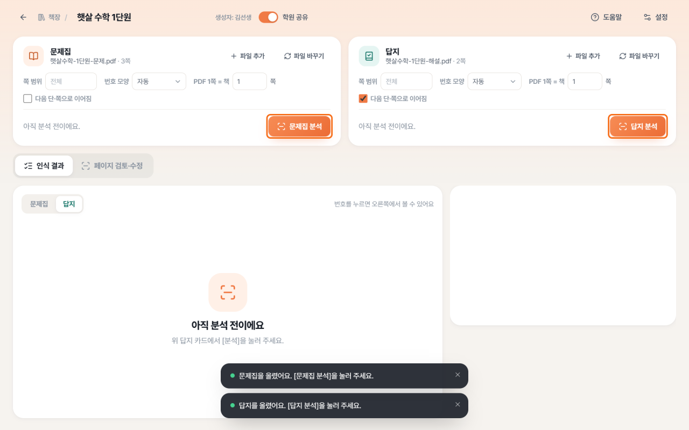
주황 테두리의 문제집 분석·답지 분석을 각각 눌러요. 여러 파일은 파일 이름 순서로 이어져요. 사진은 먼저 쪽 순서대로 이름을 정리해 두면 좋아요.
- 문제집과 답지를 분석해요.
문제집 분석을 누르고 끝나면 답지 분석도 눌러요. 분석은 책에서 문제 번호와 영역을 찾는 일이에요.
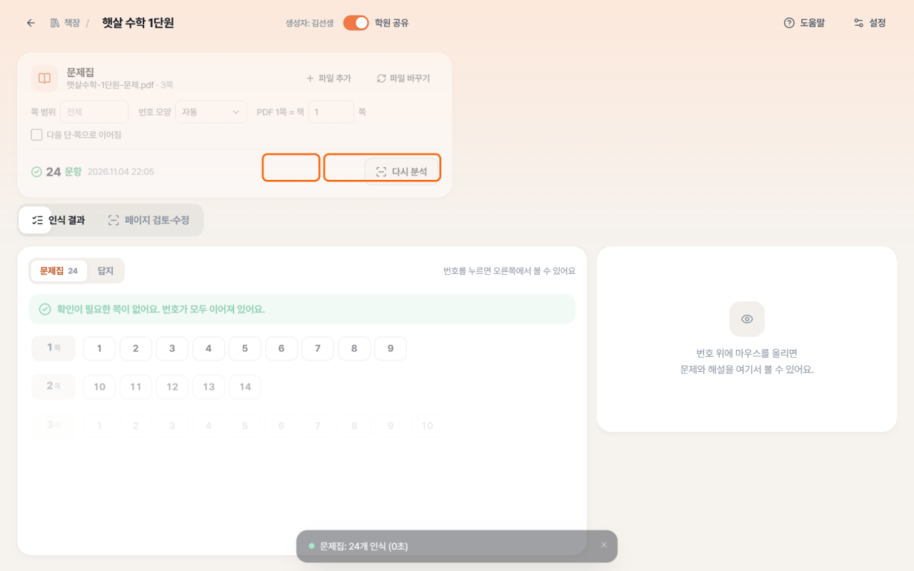
주황 테두리의 멈추기는 분석을 멈춰요. 다른 일 하면서 기다리기는 분석을 계속해요. 다른 일 하면서 기다리기를 누르면 다른 책이나 노트를 보면서 기다릴 수 있어요. 앱 자체는 켜 두세요. 필요하면 멈추기로 멈춰요.
- 인식 결과를 확인해요.
에서 번호가 잘 잡혔는지 봐요. 특히 ‘확인이 필요한 쪽’을 먼저 확인해요. 물음표가 보이면 번호를 놓쳤을 수 있어요.
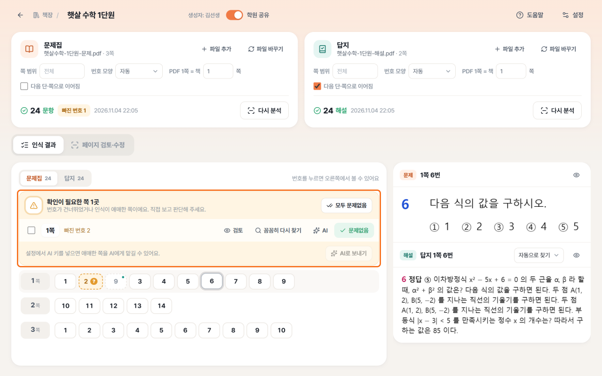
주황 테두리의 확인이 필요한 쪽에서 검토·꼼꼼히 다시 찾기·AI·문제없음을 골라요. - 필요한 쪽만 고쳐요.
검토를 누르면 으로 가요. 문제를 둘러싼 상자를 눌러 위치와 크기를 고치고, 번호가 맞는지 확인해요.
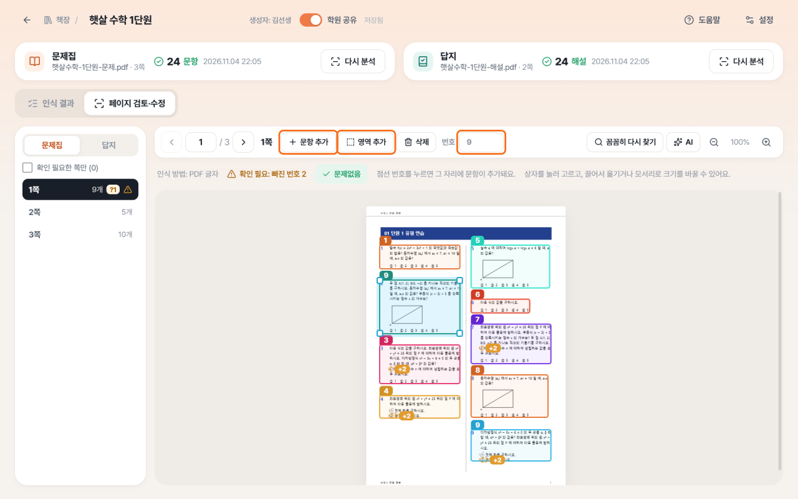
주황 테두리의 문항 추가·영역 추가·번호에서 빠지거나 잘못 잡힌 문항을 고쳐요. 빠진 문제는 문항 추가를 누르고 마우스를 누른 채 끌어 영역을 그려요. 다음 단이나 쪽으로 이어진 부분은 영역 추가로 덧붙여요.
| 버튼 | 할 일 |
|---|---|
| 검토 | 원본 쪽과 상자를 보며 직접 확인하고 고쳐요. |
| 꼼꼼히 다시 찾기 | 그 쪽만 더 자세하게 다시 읽어요. 직접 고친 내용이 바뀔 수 있으니 결과를 다시 봐요. |
| AI | AI에게 그 쪽을 읽게 해요. AI 설정을 한 경우에 써요. |
| 문제없음 | 원본과 비교해 맞는 것을 확인했을 때 눌러요. 문항을 다시 찾는 버튼은 아니에요. |
5-30이에요. 답지는 빠른 정답표보다 풀이가 있는 쪽을 분석하면 좋아요.책에 인쇄된 쪽 번호와 화면의 번호가 다르면 ‘PDF 1쪽 = 책’ 값을 확인해요. 화면에는 ‘12쪽’처럼 표시돼요.
학생 명단
- 학생 명단에서 이름을 찾아요.
첫 화면의 을 열어요. 같은 학원의 명단을 통합 클라우드와 함께 써요.
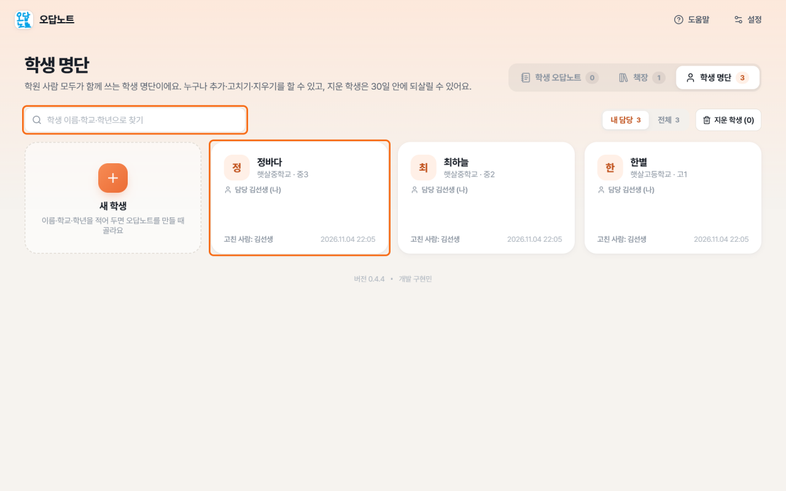
주황 테두리의 학생 명단에서 학생을 찾거나 정보를 고쳐요. - 없는 학생은 등록해요.
새 학생에서 이름·학교·학년을 적고 등록해요. 학생의 로그인 계정은 통합 클라우드 학생 명단에서 만들어요.
- 학생이 맞는지 확인해요.
노트를 만들 때 명단에서 학생을 골라요. 이름만 비슷한 다른 학생을 고르지 않도록 학교와 학년도 봐요.
담당 선생님이 바뀌어도 학생의 노트는 이어서 쓸 수 있어요. 지운 학생은 보관 기간 안에 에서 되살리기를 해요.
오답노트 만들고 번호 고르기
- 새 오답노트를 만들어요.
에서 새 오답노트를 눌러요. 명단에서 학생을 고르고, 제목과 사용할 책을 정한 뒤 만들기를 눌러요. 책은 여러 권 골라도 돼요.
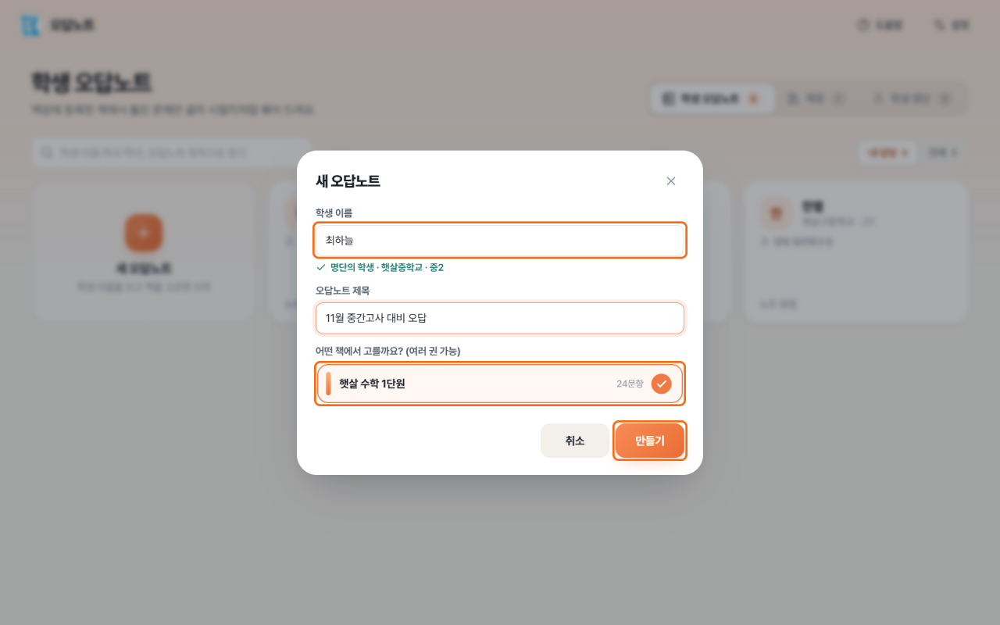
주황 테두리에서 학생과 책을 고르고 만들기를 눌러요. - 틀린 문제 번호를 눌러요.
쓸 책을 고르고 틀린 문제 번호를 눌러요. 다시 누르면 선택이 풀려요. 같은 번호가 여러 쪽에 있으면 쪽 번호도 확인해요.
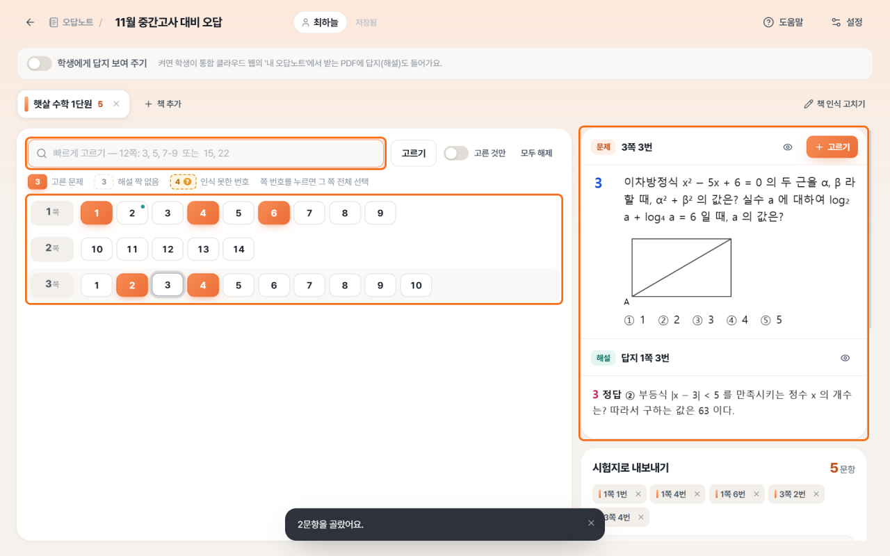
주황 테두리의 번호·빠르게 고르기·미리보기에서 고른 문항을 확인해요. - 번호가 많으면 빠르게 골라요.
‘빠르게 고르기’ 칸에
12쪽: 3, 5, 7-9처럼 적고 고르기 또는 Enter를 눌러요. 12쪽의 3·5·7·8·9번을 고르는 뜻이에요. - 미리보기로 문제와 해설을 확인해요.
선택한 문제의 영역이 잘리지 않았는지 봐요. ‘해설 짝 없음’이면 답지 분석과 인식 결과를 다시 확인해요. 고른 것만을 켜면 선택한 문항을 모아 볼 수 있어요.
학생에게 웹으로 보여 주기
학생을 명단에서 지정한 노트는 학생의 에 보여요. 학생에게 답지 보여 주기를 켜면 학생이 보는 PDF에 답지(해설)도 들어가요. 끄면 문제만 보여요.
학생에게 새 노트가 안 보이면 통합 클라우드의 동기화 상태를 확인하고, 학생 웹에서 새로 고침을 눌러요.
시험지로 내보내기
‘내보내기’는 고른 문제를 PDF나 한글 문서 파일로 만드는 일이에요.
- 시험지 머리를 확인해요.
오답노트 화면의 ‘시험지로 내보내기’에서 제목·학생·학원·선생님·날짜를 확인해요.
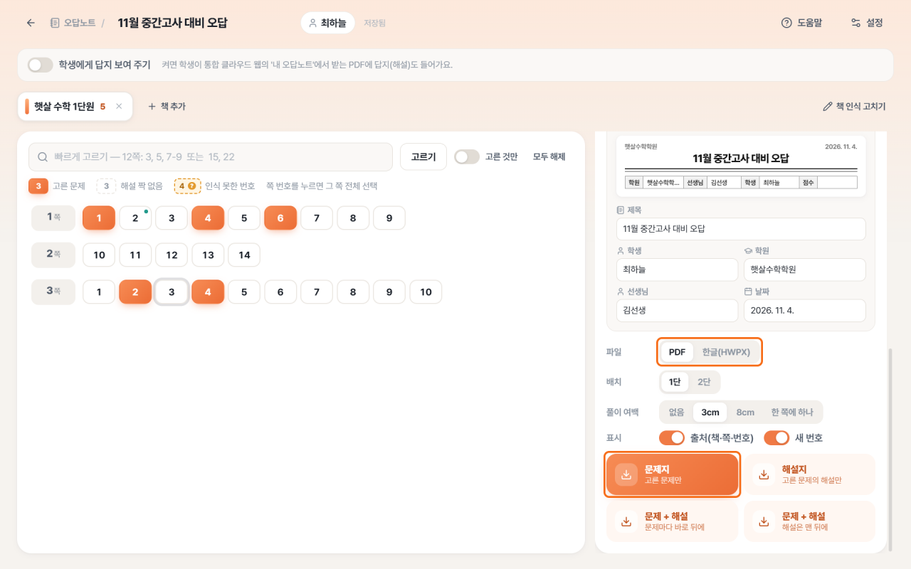
주황 테두리에서 PDF 또는 한글(HWPX)을 고르고 만들 시험지를 눌러요. - 파일 형식과 배치를 골라요.
바로 인쇄할 때는 PDF, 한글 프로그램에서 글자와 수식을 고치려면 한글(HWPX)을 골라요. 한 줄 배치는 1단, 양쪽으로 나누려면 2단을 골라요.
- 필요한 시험지를 만들어요.
문제지는 문제만, 해설지는 해설만 만들어요. 문제 + 해설은 문제마다 바로 뒤에 넣거나 해설을 맨 뒤에 모을 수 있어요.
- 저장한 파일을 열어 확인해요.
저장 위치를 고르고 파일을 저장해요. 한글 문서를 만드는 데 시간이 걸리면 완료 안내의 저장하기를 눌러요. 문제·학생 이름·해설을 확인한 뒤 인쇄해요.
선생님이 저장한 시험지의 형식·배치는 학생 웹에서 받는 PDF와 같지 않을 수 있어요. 학생의 답지 포함 여부는 학생에게 답지 보여 주기로 정해요.
기본값·AI 설정
- 설정을 열어요.
맨 위 오른쪽 설정을 눌러요. 바로 왼쪽 도움말로 이 설명서를 다시 볼 수 있어요.
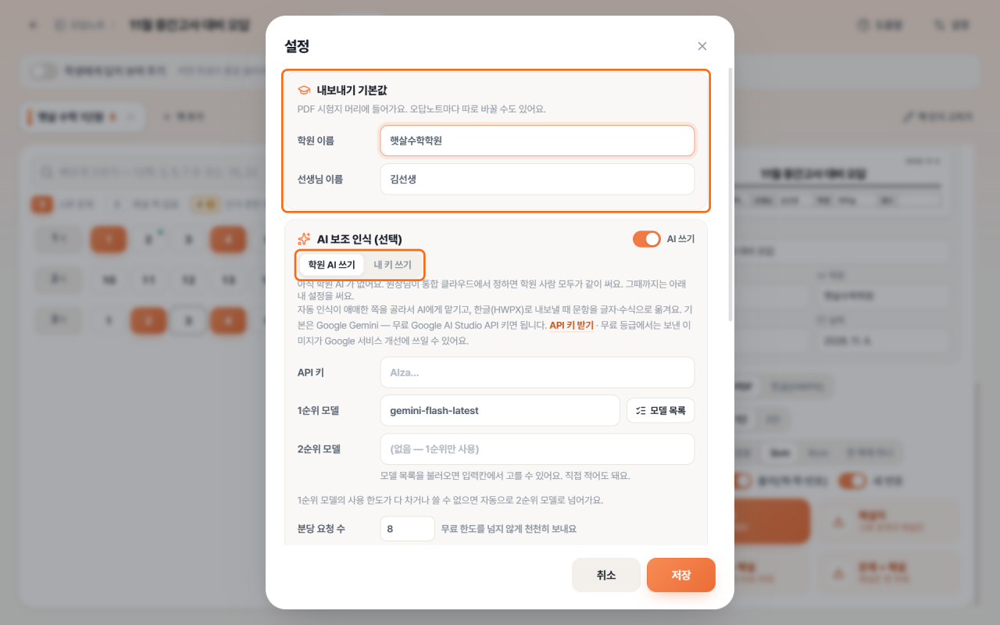
주황 테두리의 내보내기 기본값·학원 AI 쓰기를 확인해요. - 시험지에 쓸 이름을 넣어요.
‘내보내기 기본값’에 학원 이름과 선생님 이름을 적어요. 예를 들어 햇살수학학원·김선생이에요. 노트마다 따로 바꿔도 돼요.
- AI는 필요할 때만 켜요.
‘AI 보조 인식 (선택)’의 AI 쓰기를 켜고 학원 AI 쓰기를 고르는 것을 권해요. 원장님이 통합 클라우드의 학원 AI를 먼저 정해야 해요.
- 설정을 저장해요.
저장을 눌러요. AI를 쓰지 않아도 책 등록·기본 분석·번호 고르기·PDF 만들기는 할 수 있어요.
내 키 쓰기는 연결용 비밀키와 AI 종류를 직접 정하는 방법이에요. 어렵다면 혼자 바꾸지 말고 원장님과 상의해요.